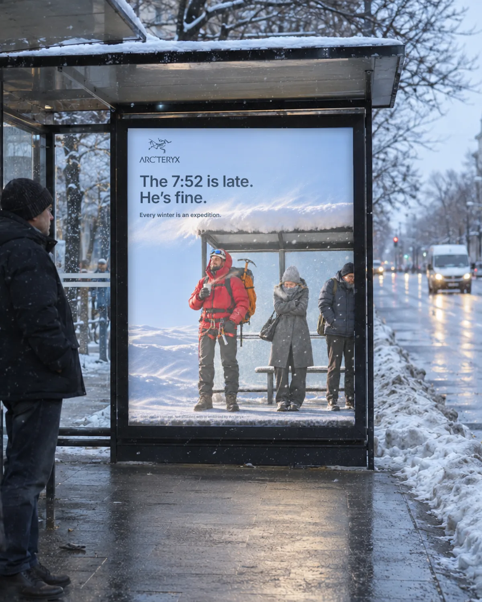
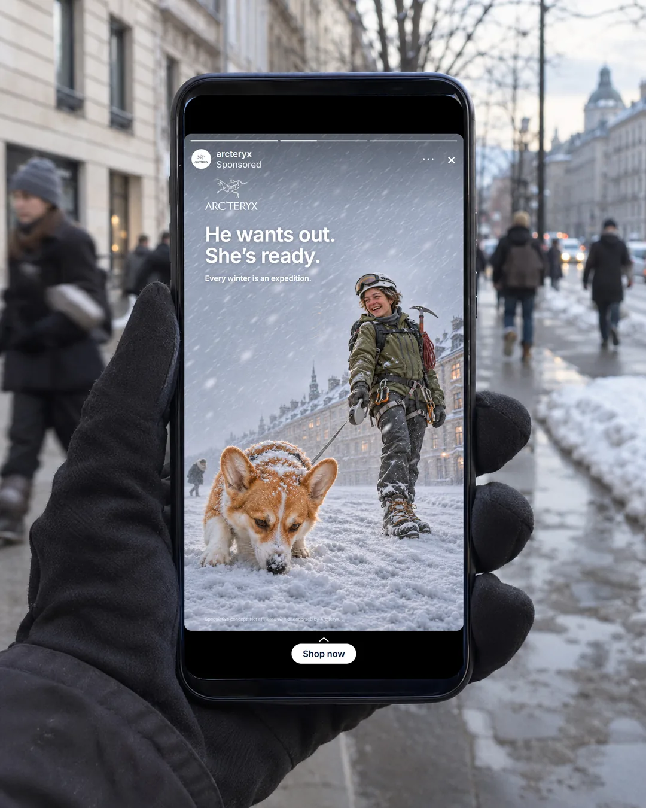
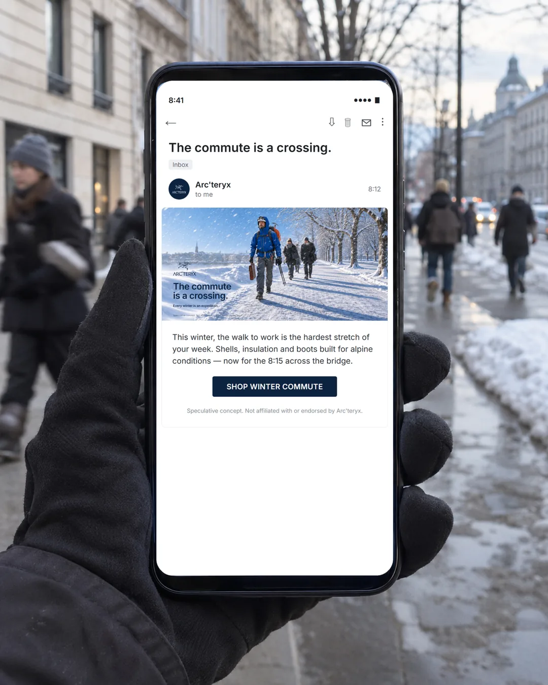

Arc'teryx
ARCTERYX_/_01
Every winter is an expedition.
Рекламный концепт для Arc'teryx. Куртку для гор покупатель носит в городе: ждёт автобус в 7:52, идёт пешком в офис. Кампания называет эту дорогу экспедицией. Герой в полном горном снаряжении стоит среди обычных прохожих, и снегопад, который им мешает, ему — нет.
Концепт вырос из 45 высказываний покупателей и тех, кто только выбирает куртку, на Reddit. Из них — гипотеза: если бренд сам даст горожанину оправдание носить горную куртку каждый день, больше людей добавят её в корзину. Кампанию проверяет A/B-тест на странице товара. Подробно — в главах 02 и 03.
+3%цель по доле добавлений в корзину. Ориентир по кейсам New Look и CAMILLA (Contentsquare), не обещание
45высказываний покупателей с Reddit
6ситуаций выбора куртки
6носителей: щит, постер, ситилайт, сторис, сайт, рассылка





ARCTERYX_/_02
Куртка без гор
Я собрал 45 высказываний покупателей Arc'teryx на Reddit. Сообщество само отговаривает горожан от покупки: «оно не стоит денег, если ты реально не пользуешься уличными функциями», «люди идут 1,2 км на пикник и думают, что им нужна куртка за 800 долларов». Один покупатель выбрал другую модель, хотя цвет ему нравился: он не понимал, когда будет её носить.
Другие пишут, что носят куртку каждый день: «стоит того, чтобы носить её каждый день», «стоит каждой копейки, ношу постоянно».
Бренд говорит только о функции и прямо боится городской моды. Вице-президент по дизайну Дэн Грин: «как только мы повернём к стритвиру, мы всё потеряем».
Инсайт: горожанину нужно разрешение носить горную куртку каждый день. Кампания даёт его языком самого бренда: городская зима тоже экспедиция.
Правила системы: город в снегопад, герой в горном снаряжении среди обычных прохожих, строка — бытовая ситуация словами экспедиции, лозунг один на все носители.
ARCTERYX_/_03
Как проверить
Тест: A/B блока на странице товара, кадр кампании против текущего блока. Метрика — доля добавлений в корзину. Защита: возвраты не растут, средний чек не падает за счёт ухода в дешёвые модели.
Ориентир — +3% к доле добавлений в корзину, по кейсам New Look и CAMILLA (Contentsquare). Это кейсы вендора без выборки, поэтому базу беру из аналитики магазина до старта, а чужой процент не обещаю.
Это гипотеза, тест не запускался. Концепт, не заказ: Arc'teryx к нему отношения не имеет.